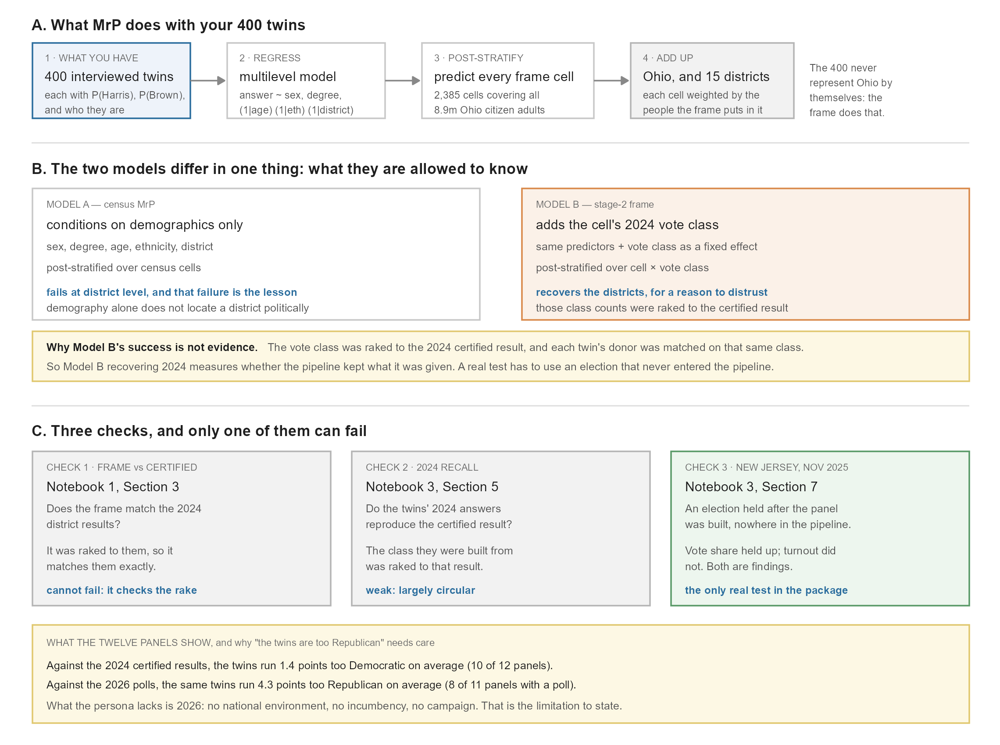
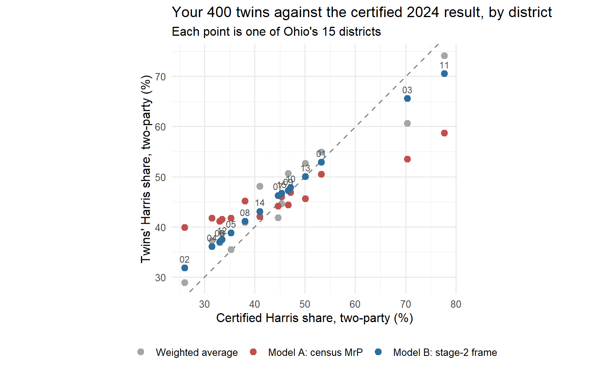
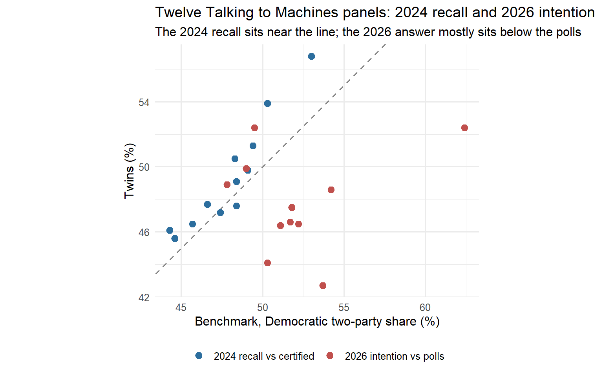
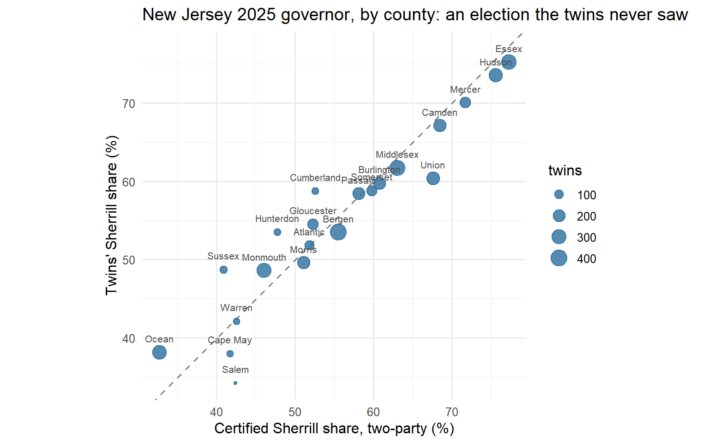

Notebook 3 — MrP and validation
LLMSS 2026, Workshop 1 (AIPOP) · Hong Kong, 13 October 2026
What you will do
Notebook 2 left you 400 interviewed twins. Each has a probability of voting for Harris in 2024 and for Brown in 2026. Averaging them tells you about these 400 twins. MrP (multilevel regression and post-stratification) turns them into an estimate for Ohio, and for each of its 15 districts:
- regress: fit a multilevel model with the twin’s answer on the left and who the twin is on the right. In words: P(Harris), or P(Brown), modelled on sex, degree, age band, ethnicity and district;
- post-stratify: predict every cell of the Ohio frame and add the cells up, weighted by how many people the frame puts in each;
- validate: compare with the certified 2024 result, district by district, and with the 2026 Senate polls.
You will fit two versions. Model A is textbook census MrP and fails at the district level in an instructive way. Model B uses the stage-2 frame from Notebook 1 and gets the districts right, for a reason you should be suspicious of.
The last section steps back from your 400 twins to the Talking to Machines panels: twelve of them, and a held-out election that tests what the 2024 recall cannot.
Figure 3.1 is a reading guide for the whole notebook: what MrP does with your twins (A), the one thing that separates the two models (B), and the three checks, only one of which can fail (C).
Figure 3.1. Reading guide.
How to read this notebook. As in Notebooks 1 and 2, every table and figure the code prints has a number, given in bold just above the code that prints it, and the text says which table, row or column a number comes from.
The first block loads the R packages the notebook uses, including lme4 for the multilevel models, and sets the folders it reads from.
library(arrow)
library(data.table)
library(ggplot2)
library(lme4)
DATA <- file.path("..", "data")
OUT <- file.path("..", "output")
PANELS <- file.exists(file.path(DATA, "benchmark_12panels.csv")) # Section 7: not in the public repository1. Inputs
The block below loads your interviewed twins, the file Notebook 2 deposited, as a table called iv, and prints its size: 400 twins, one row each, with their skeleton, rake weight and answers.
Table 3.1. iv: size (rows, columns).
iv <- as.data.table(read_parquet(file.path(OUT, "oh_mini_panel_400_interviewed.parquet")))
dim(iv)[1] 400 20The post-stratification frame is the list of cells MrP predicts and then adds up. It is the Notebook 1 stage-2 frame (sf2), collapsed to the cells your twins carry: district × sex × ethnicity × age × degree. The block below loads sf2, adds up its rows by that key into a table called frame, and keeps two columns per cell: its adults (N) and its 2024 voters (voters_2024). It prints the totals.
Table 3.2. frame: cells, adults and 2024 voters.
sf2 <- as.data.table(read_parquet(file.path(DATA, "SF_extended_OH.parquet")))
frame <- sf2[, .(N = sum(N), voters_2024 = sum(N_D + N_R + N_Other)),
by = .(cd = area, gender, ethnicity, age_bins, college_grad)]
frame <- frame[N > 0]
cat(sprintf("%s cells, %s adults, %s 2024 voters\n", format(nrow(frame), big.mark = ","),
format(round(sum(frame$N)), big.mark = ","), format(round(sum(frame$voters_2024)), big.mark = ",")))2,385 cells, 8,931,251 adults, 5,765,026 2024 votersTable 3.2: 2,385 cells holding Ohio’s 8,931,251 citizen adults (the figure in Notebook 1, Table 1.2), of whom about 5.77 million voted in 2024.
From Section 5 on, the same frame is also needed split by 2024 vote class. The block below builds that as frame_class: each cell of frame becomes four rows, one per class (D, R, Other, stay), with the stage-2 counts N_D, N_R, N_Other and N_stay as their N. It prints the adults in each class.
Table 3.3. frame_class: adults per 2024 vote class.
frame_class <- melt(sf2, id.vars = c("area", "gender", "ethnicity", "age_bins", "college_grad"),
measure.vars = c("N_D", "N_R", "N_Other", "N_stay"),
variable.name = "vote2024", value.name = "N")
frame_class[, vote2024 := sub("^N_", "", as.character(vote2024))]
frame_class <- frame_class[N > 0, .(N = sum(N)), by = .(cd = area, gender, ethnicity, age_bins, college_grad, vote2024)]
frame_class[, .(adults = round(sum(N))), by = vote2024]| vote2024 | adults |
|---|---|
| D | 2533703 |
| R | 3180121 |
| Other | 51202 |
| stay | 3166225 |
The benchmark is the certified 2024 result by district, from the same file as Notebook 1, Section 3. The block below loads it as cert (one row per district, with Harris’s two-party share in certified) and computes the statewide share from the county returns (state_certified, 44.3%). It prints nothing; both appear in Tables 3.5 and 3.8.
cert <- fread(file.path(DATA, "predictor_cd119_2024.csv"),
colClasses = list(character = "CD119"))[state == "OH"]
cert <- cert[, .(cd = paste0("OH-", CD119), certified = votes_D / (votes_D + votes_R))]
state_certified <- fread(file.path(DATA, "oh_county_certified_2024.csv"))[, sum(sD * votes) / sum((sD + sR) * votes)]2. The starting point: a weighted average
Notebook 2 averaged the twins with their rake weights. That is a fair statewide number, since the weights make the 400 match the frame’s margins. It is a poor district number, because 400 twins spread over 15 districts leaves about 27 a district.
The block below repeats that average. voters keeps the twins whose class is D or R; harris_2p is each one’s Harris share of its own Harris + Trump probability. raw_state is the weighted average for Ohio, and raw_cd the same average for each district. It prints the five districts with the fewest twins.
Table 3.4. The weighted average by district (raw), for the five districts with the fewest twins.
voters <- iv[vote2024 != "stay"]
voters[, harris_2p := harris / (harris + trump)]
raw_state <- voters[, sum(weight * harris_2p) / sum(weight)]
raw_cd <- voters[, .(twins = .N, raw = sum(weight * harris_2p) / sum(weight)), by = cd]
raw_cd[order(twins)][1:5]| cd | twins | raw |
|---|---|---|
| OH-11 | 14 | 0.7417537 |
| OH-02 | 16 | 0.2887492 |
| OH-03 | 16 | 0.6067182 |
| OH-15 | 16 | 0.4461607 |
| OH-05 | 17 | 0.3545532 |
Look at the twins column of Table 3.4: OH-11 rests on 14 voting twins, and the others on 16 or 17. A district estimate from so few people is noisy.
3. Model A: census MrP
The outcome is each twin’s Harris probability among 2024 voters. The probability comes from the interview in Notebook 2: each twin answered with probabilities rather than a choice, so it enters the model as a fractional Harris vote and a fractional Trump vote. In practice every twin enters twice: once as a Harris vote with weight p, once as a Trump vote with weight 1 − p. A logistic model fitted to these rows estimates the same thing as a model of the probabilities themselves. glmer warns about non-integer weights, which is expected here.
Model A is the textbook MrP: it uses only what the census knows about people.
- Fixed effects for the two-level variables, sex and degree.
- Random intercepts for age, ethnicity and district. A district with few twins is pulled towards the state average; one with more is left closer to its own data. This partial pooling is the “multilevel” in MrP.
The block below prints nothing. It defines stack(), which makes the two rows per twin (y = 1 weighted by p, y = 0 weighted by 1 − p), applies it to voters to build the model’s data, s24, and defines fit(), the one call that fits every model in this notebook.
stack <- function(d, p, w = rep(1, nrow(d))) {
keep <- d[, .(cd, gender, ethnicity, age_bins, college_grad, vote2024)]
rbind(cbind(keep, y = 1L, wt = p * w), cbind(keep, y = 0L, wt = (1 - p) * w))
}
s24 <- stack(voters, voters$harris_2p)
# one fitting call for every model in this notebook; nAGQ = 0 is the fast, robust approximation
fit <- function(f, d) suppressWarnings(glmer(f, data = d, weights = wt, family = binomial, nAGQ = 0))The next block fits Model A as m_a, prints how long it took, and prints the standard deviation of each random intercept.
Table 3.5. Model A: the random-intercept standard deviations (Std.Dev.), one per grouping.
t0 <- Sys.time()
m_a <- fit(y ~ gender + college_grad + (1 | age_bins) + (1 | ethnicity) + (1 | cd), s24)
cat(sprintf("fitted in %.1f s\n", as.numeric(difftime(Sys.time(), t0, units = "secs"))))fitted in 0.4 sVarCorr(m_a) Groups Name Std.Dev.
cd (Intercept) 0.0000
age_bins (Intercept) 0.0000
ethnicity (Intercept) 1.0644 The random-effect standard deviations say how much each grouping matters once the others are held fixed. Look at the cd (district) row of Table 3.5: its standard deviation is 0. The model found no district differences worth keeping.
Post-stratify
Predict every frame cell, including cells no twin sits in (allow.new.levels gives them the average for that group). Then weight each cell by its 2024 voters, and add up.
The block below does exactly that and prints nothing. It adds Model A’s predicted Harris share to every row of frame (column p_a), then averages p_a weighted by voters_2024: by district into a_cd, and for Ohio into a_state. Both appear in the tables below.
frame[, p_a := predict(m_a, newdata = frame, type = "response", allow.new.levels = TRUE)]
a_cd <- frame[, .(model_a = sum(voters_2024 * p_a) / sum(voters_2024)), by = cd]
a_state <- frame[, sum(voters_2024 * p_a) / sum(voters_2024)]4. Validate Model A, district by district
The block below joins cert, raw_cd and a_cd into one table, v, one row per district, and prints it in percent. It then summarises each estimate’s error across the 15 districts as a root mean squared error (RMSE), in points: the typical size of a district’s miss.
Table 3.6. For each district: the certified Harris share, the plain weighted average (Section 2), and Model A, all in percent.
Table 3.7. The error of each estimate across the 15 districts (RMSE, in points).
v <- Reduce(function(a, b) merge(a, b, by = "cd"), list(cert, raw_cd, a_cd))
v[order(cd), .(cd, twins, certified = round(100 * certified, 1), weighted_avg = round(100 * raw, 1),
model_a = round(100 * model_a, 1))]| cd | twins | certified | weighted_avg | model_a |
|---|---|---|---|---|
| OH-01 | 18 | 53.2 | 54.9 | 50.5 |
| OH-02 | 16 | 26.0 | 28.9 | 39.9 |
| OH-03 | 16 | 70.3 | 60.7 | 53.5 |
| OH-04 | 18 | 31.5 | 37.2 | 41.7 |
| OH-05 | 17 | 35.2 | 35.5 | 41.8 |
| OH-06 | 17 | 33.0 | 36.9 | 41.1 |
| OH-07 | 19 | 44.6 | 41.8 | 44.2 |
| OH-08 | 18 | 38.0 | 40.9 | 45.1 |
| OH-09 | 17 | 46.6 | 50.6 | 44.4 |
| OH-10 | 17 | 47.1 | 47.9 | 46.9 |
| OH-11 | 14 | 77.7 | 74.2 | 58.7 |
| OH-12 | 18 | 33.5 | 38.7 | 41.5 |
| OH-13 | 18 | 50.0 | 52.7 | 45.6 |
| OH-14 | 18 | 41.0 | 48.1 | 42.0 |
| OH-15 | 16 | 45.4 | 44.6 | 46.0 |
v[, .(rmse_weighted_avg = sqrt(mean((100 * (raw - certified))^2)),
rmse_model_a = sqrt(mean((100 * (model_a - certified))^2)))]| rmse_weighted_avg | rmse_model_a |
|---|---|
| 4.352239 | 8.939417 |
Model A pulls every district towards the middle, and it does worse than the plain weighted average: its RMSE in Table 3.7 is about twice the weighted average’s. In Table 3.6, the strongly Democratic districts around Columbus and Cleveland come out far too low (OH-03: certified 70.3, Model A 53.5; OH-11: 77.7 against 58.7), and the most Republican ones too high (OH-02: 26.0 against 39.9).
The reason is that Ohio’s districts differ politically, not just demographically. Two white, non-graduate 50-year-olds in OH-11 and OH-06 vote differently, and the census cell cannot tell them apart. The district intercept could in principle pick that up, but with about 27 twins a district it is shrunk to zero (Table 3.5). Census MrP normally rescues this with a district-level predictor, such as the previous election’s result.
Exercise 4.1. Which districts does Model A move furthest from the weighted average, and are they the ones with the fewest twins? Write a block that computes each district’s shift in v (Model A minus the weighted average, model_a - raw, in points) and prints the five largest with their twins.
# your code here5. Model B: put the vote class back
Your frame already knows each cell’s 2024 politics. Stage 2 (Notebook 1, Section 2) split every cell into D, R, other and stay-home, raked to the certified result. Every twin carries its class, and the donor was matched on it. Model B adds the class as a predictor and post-stratifies over cell × vote class, using the stage-2 counts.
Be clear about the mechanism before you look at the result. The new predictor is the 2024 vote class of the twin’s cell, which was raked to the certified result. The outcome is the twin’s own 2024 answer, and the twin’s donor was chosen to share that same class. So the model regresses the twins’ 2024 answers on a variable those answers were built to follow. A strong fit is guaranteed by construction.
The block below fits Model B as m_b: Model A plus the vote class as a fixed effect. It prints the fixed effects.
Table 3.8. Model B: fixed effects, on the log-odds scale.
m_b <- fit(y ~ gender + college_grad + vote2024 + (1 | age_bins) + (1 | ethnicity) + (1 | cd), s24)
fixef(m_b) (Intercept) genderM
1.8718986 -0.2068337
college_gradHas a College Degree vote2024R
0.3647604 -3.7996738 In Table 3.8, vote2024R is by far the largest effect: being in an R cell rather than a D cell lowers the log-odds of a Harris answer by about 3.8.
The two-party share is about D and R voters only, so post-stratification uses the D and R cells of the stage-2 frame. Third-party voters count for neither.
The block below keeps the D and R rows of frame_class as dr, adds Model B’s prediction to each (p_b), and averages it weighted by the cell’s N: by district into b_cd, and for Ohio into b_state. It adds Model B to v and prints two tables.
Table 3.9. District error of all three estimates (RMSE, in points), and the correlation between Model B and the certified result (r_model_b).
Table 3.10. Statewide Harris share from each estimate, against the certified result, in percent.
dr <- frame_class[vote2024 %in% c("D", "R")]
dr[, p_b := predict(m_b, newdata = dr, type = "response", allow.new.levels = TRUE)]
b_cd <- dr[, .(model_b = sum(N * p_b) / sum(N)), by = cd]
b_state <- dr[, sum(N * p_b) / sum(N)]
v <- merge(v, b_cd, by = "cd")
v[, .(rmse_weighted_avg = sqrt(mean((100 * (raw - certified))^2)),
rmse_model_a = sqrt(mean((100 * (model_a - certified))^2)),
rmse_model_b = sqrt(mean((100 * (model_b - certified))^2)),
r_model_b = cor(model_b, certified))]| rmse_weighted_avg | rmse_model_a | rmse_model_b | r_model_b |
|---|---|---|---|
| 4.352239 | 8.939417 | 3.583824 | 0.9997924 |
data.table(estimate = c("weighted average (Notebook 2)", "Model A: census MrP", "Model B: stage-2 frame", "certified"),
harris_2p = round(100 * c(raw_state, a_state, b_state, state_certified), 1))| estimate | harris_2p |
|---|---|
| weighted average (Notebook 2) | 45.9 |
| Model A: census MrP | 45.3 |
| Model B: stage-2 frame | 45.8 |
| certified | 44.3 |
In Table 3.9, Model B has the smallest district error of the three and a correlation with the certified result of almost 1. In Table 3.10 all three statewide estimates sit one to two points above the certified 44.3.
The last block plots all three estimates against the certified result, one point per district and estimate, saves the plot to figures/, and shows it.
Figure 3.2. Your 400 twins against the certified 2024 result, by district: weighted average (grey), Model A (red), Model B (blue, labelled by district).
long <- melt(v, id.vars = c("cd", "certified", "twins"), measure.vars = c("raw", "model_a", "model_b"),
variable.name = "estimate", value.name = "twins_2p")
long[, estimate := factor(estimate, c("raw", "model_a", "model_b"),
c("Weighted average", "Model A: census MrP", "Model B: stage-2 frame"))]
p_mrp <- ggplot(long, aes(100 * certified, 100 * twins_2p, colour = estimate)) +
geom_abline(slope = 1, intercept = 0, linetype = "dashed", colour = "grey50") +
geom_point(size = 2.6) +
geom_text(data = long[estimate == "Model B: stage-2 frame"], aes(label = sub("OH-", "", cd)),
nudge_y = 1.8, size = 3, colour = "grey30", show.legend = FALSE) +
scale_colour_manual(values = c("Weighted average" = "grey65", "Model A: census MrP" = "#c0504d",
"Model B: stage-2 frame" = "#2c6e9e")) +
labs(x = "Certified Harris share, two-party (%)", y = "Twins' Harris share, two-party (%)",
colour = NULL, title = "Your 400 twins against the certified 2024 result, by district",
subtitle = "Each point is one of Ohio's 15 districts") +
coord_equal() + theme_minimal(base_size = 12) + theme(legend.position = "bottom")
ggsave(file.path("..", "figures", "oh_mrp_vs_certified.png"), p_mrp, width = 8, height = 6, dpi = 200)
p_mrp
In Figure 3.2, the blue points (Model B) sit close to the dashed line, and the red points (Model A) are squeezed towards the middle.
Discussion: why Model B’s success is not evidence. Model B lands close to the certified result. Now trace what went in, step by step:
- each cell’s D and R counts were raked to that very result (Notebook 1, Section 2);
- each twin’s donor was matched on the class of its cell (Notebook 2, Section 3);
- so the donated attitudes the model read were chosen to fit that class, and the model gave the class back almost every time (Notebook 2, Table 2.12);
- Model B then weights those answers by the same raked class counts.
Recovering 2024 therefore tests whether the pipeline kept what it was given. It says nothing about whether the twins can read an election. That is worth knowing, since a pipeline that lost its inputs would be broken, but it is a check on the plumbing. A recovery within a point or two is the pipeline working as designed.
Evidence that twins can read an election needs an election that is in no part of the pipeline: not in the frame, the rake, the donors or the persona. If the twins get that one right, the calibration cannot be the reason. Section 7 has one: New Jersey, November 2025.
6. The 2026 Senate race
For 2026, Model B’s structure is the useful one. It asks how each 2024 class, within each census cell, votes in 2026, and weights the cells by the frame’s class counts. It needs two models, because who turns out is not given:
- a turnout model, fitted on every twin (the probability of voting at all);
- a vote model on Brown’s two-party share, with each twin weighted by its own probability of voting.
Your twins have no third-party class, so the vote class enters as a random intercept. The frame’s small “Other” class (51,202 adults in Table 3.3, about 0.6% of Ohio) then gets the average.
The block below prints nothing. It adds two columns to iv: turnout (one minus the no_vote probability) and brown_2p (Brown’s share of the Brown + Husted probability). It fits the turnout model (m_turn) and the vote model (m_vote), and adds both predictions to every row of frame_class (p_turn, p_brown). brown_state is Brown’s share among expected voters in Ohio, and turnout_state the expected turnout among adults.
iv[, `:=`(turnout = 1 - no_vote, brown_2p = dem / (dem + rep))]
f26 <- y ~ gender + college_grad + (1 | vote2024) + (1 | age_bins) + (1 | ethnicity) + (1 | cd)
m_turn <- fit(f26, stack(iv, iv$turnout))
m_vote <- fit(f26, stack(iv, iv$brown_2p, iv$turnout))
frame_class[, `:=`(p_turn = predict(m_turn, newdata = frame_class, type = "response", allow.new.levels = TRUE),
p_brown = predict(m_vote, newdata = frame_class, type = "response", allow.new.levels = TRUE))]
brown_state <- frame_class[, sum(N * p_turn * p_brown) / sum(N * p_turn)]
turnout_state <- frame_class[, sum(N * p_turn) / sum(N)]The next block puts your twins’ Brown share beside three comparisons: the project’s panel (its Ohio row in benchmark_ohio.csv; Section 7 shows all twelve panels); the RealClearPolitics polling average of 8–9 September 2026 (Brown 48.8, Husted 45.5); and, as a baseline, Harris’s certified 2024 share. It then prints the turnout your twins imply.
Table 3.11. Brown’s share of the two-party vote in 2026, in percent, from four sources; then the turnout your twins imply.
# RealClearPolitics average of 8–9 September 2026, Brown 48.8 / Husted 45.5
POLL_BROWN_2P <- 48.8 / (48.8 + 45.5)
bench <- fread(file.path(DATA, "benchmark_ohio.csv"))[panel == "oh_statewide"]
data.table(
source = c("Your twins, MrP", "Talking to Machines panel, 4,000 registrants", "RCP polling average",
"2024 baseline: certified Harris share"),
brown_2p = round(100 * c(brown_state, bench$dem_2p_2026_llm / 100, POLL_BROWN_2P, state_certified), 1))| source | brown_2p |
|---|---|
| Your twins, MrP | 47.3 |
| Talking to Machines panel, 4,000 registrants | 46.6 |
| RCP polling average | 51.7 |
| 2024 baseline: certified Harris share | 44.3 |
cat(sprintf("Turnout implied by your twins: %.1f%% of adults\n", 100 * turnout_state))Turnout implied by your twins: 66.2% of adultsDiscussion. In Table 3.11, the project’s twins give Brown 46.6 (the
Talking to Machines panelrow) and yours give him 47.3 (Your twins, MrP), both close to the 2024 baseline of 44.3, while the polls give him 51.7 (RCP polling average). The persona carries 2024-era partisanship and issue positions and nothing about 2026: no national environment, no incumbency, no campaign, no Sherrod Brown crossover vote. A record-only twin is a stable partisan baseline, not a reading of the current race.
Exercise 6.1. Brown’s appeal rests on winning some Trump voters. How much crossover do your twins give him? Write a block that adds up frame_class by 2024 class (vote2024) and prints each class’s adults, predicted turnout (p_turn) and predicted Brown share (p_brown), in percent.
# your code here7. What the Talking to Machines panels show
Your panel is 400 synthetic twins. Talking to Machines builds panels of 4,000 real registrants each and interviews every one with the same vote module. Twelve of them are shown here, in six states: Ohio, North Carolina, Pennsylvania, Washington, New York and New Jersey.
Note on the data. Only the Ohio files are public. The other states’ panel results carry non-commercial terms, so they are not in this repository, and the blocks in this section run only when those files are present. The website version of this notebook shows their output.
The block below loads their results from benchmark_12panels.csv as a table called b, and prints one row per panel. The New Jersey Senate race has no public poll, so its 2026 poll and gap show a dash.
Table 3.12. The twelve panels. Each row is a different panel: twelve different electorates, statewide or single-district, each compared with its own benchmark. They are not twelve versions of the same thing. The first three numeric columns are 2024: the certified Democratic two-party share (harris_certified), the twins’ recall of their own 2024 vote (harris_twins), and the gap. The last three are 2026: the polling average for that race (polls_2026), the twins’ stated intention (twins_2026), and the gap. All figures are in percent.
b <- fread(file.path(DATA, "benchmark_12panels.csv"))
dash <- function(x) fifelse(is.na(x), "—", formatC(x, format = "f", digits = 1)) # no poll: shown as a dash, never filled
b[, .(panel = label, harris_certified = harris_2p_certified, harris_twins = harris_2p_twins, gap_2024,
polls_2026 = dash(dem_2p_polls), twins_2026 = dem_2p_2026_llm, gap_2026 = dash(dem_2p_2026_llm - dem_2p_polls))]| panel | harris_certified | harris_twins | gap_2024 | polls_2026 | twins_2026 | gap_2026 |
|---|---|---|---|---|---|---|
| OH Senate | 44.3 | 46.1 | 1.8 | 51.7 | 46.6 | -5.1 |
| OH-07 | 44.6 | 45.6 | 1.0 | 53.7 | 42.7 | -11.0 |
| OH-09 | 46.6 | 47.7 | 1.0 | 47.8 | 48.9 | 1.1 |
| NC Senate | 48.4 | 47.6 | -0.7 | 54.2 | 48.6 | -5.6 |
| PA Governor | 49.1 | 49.8 | 0.7 | 62.4 | 52.4 | -10.0 |
| PA-07 | 48.4 | 49.1 | 0.8 | 52.2 | 46.5 | -5.7 |
| PA-08 | 45.7 | 46.5 | 0.8 | 51.1 | 46.4 | -4.7 |
| PA-10 | 47.4 | 47.2 | -0.1 | 50.3 | 44.1 | -6.2 |
| WA-03 | 48.3 | 50.5 | 2.2 | 49.0 | 49.9 | 0.9 |
| NY-17 | 50.3 | 53.9 | 3.6 | 49.5 | 52.4 | 2.9 |
| NJ Senate | 53.0 | 56.8 | 3.8 | — | 59.0 | — |
| NJ-07 | 49.4 | 51.3 | 1.9 | 51.8 | 47.5 | -4.3 |
The first row of Table 3.12, OH Senate, is the project’s panel from Notebook 2, Table 2.13. In the gap_2024 column, ten of the twelve panels reproduce the certified 2024 Democratic two-party share to within 2.6 points, and nine to within 2; the largest error is 3.8 points, in New Jersey (NJ Senate). Against 2026 polling the picture is different, and consistently so. Of the eleven panels with a poll, eight have a negative gap_2026, between 4.3 and 11.0 points below the polls, and three sit above them, by 0.9 to 2.9 (OH-09, WA-03, NY-17). The panels recover where the electorate has already been, and read more Republican than the polls about where it is going.
The next block plots the same table: each panel appears twice, once for 2024 (blue: twins against the certified result) and once for 2026 (red: twins against the polls).
Figure 3.3. The twelve panels: 2024 recall and 2026 intention against their benchmarks.
bl <- rbind(b[, .(label, benchmark = harris_2p_certified, twins = harris_2p_twins, contest = "2024 recall vs certified")],
b[!is.na(dem_2p_polls), .(label, benchmark = dem_2p_polls, twins = dem_2p_2026_llm, contest = "2026 intention vs polls")])
ggplot(bl, aes(benchmark, twins, colour = contest)) +
geom_abline(slope = 1, intercept = 0, linetype = "dashed", colour = "grey50") +
geom_point(size = 2.6) +
scale_colour_manual(values = c("#2c6e9e", "#c0504d")) +
labs(x = "Benchmark, Democratic two-party share (%)", y = "Twins (%)", colour = NULL,
title = "Twelve Talking to Machines panels: 2024 recall and 2026 intention",
subtitle = "The 2024 recall sits near the line; the 2026 answer mostly sits below the polls") +
coord_equal() + theme_minimal(base_size = 12) + theme(legend.position = "bottom")
A held-out election: New Jersey, November 2025
The 2024 result is inside the pipeline. The 4 November 2025 New Jersey governor’s race is in no part of it: not in the frame, the donors or the persona. That makes it the real test.
The block below loads the test as nj, one row per New Jersey county: the number of twins in the county (n_twins), the certified share for Mikie Sherrill, the Democrat (certified), the twins’ predicted share (twins), and the gap. It prints two summaries across the 21 counties, then plots each county.
Figure 3.4. New Jersey 2025 governor, by county: twins against the certified result. Above the plot, r is the correlation between the two, and MAE the average miss in points, each county weighted by its twins.
nj <- fread(file.path(DATA, "nj2025_holdout_counties.csv"))
cat(sprintf("21 counties: r = %.3f, twin-weighted MAE %.1f points\n",
nj[, cor(twins, certified)], nj[, sum(n_twins * abs(gap)) / sum(n_twins)]))21 counties: r = 0.944, twin-weighted MAE 2.5 pointsggplot(nj, aes(certified, twins)) +
geom_abline(slope = 1, intercept = 0, linetype = "dashed", colour = "grey50") +
geom_point(aes(size = n_twins), colour = "#2c6e9e", alpha = 0.8) +
geom_text(aes(label = county), nudge_y = 1.8, size = 2.8, colour = "grey30") +
labs(x = "Certified Sherrill share, two-party (%)", y = "Twins' Sherrill share (%)", size = "twins",
title = "New Jersey 2025 governor, by county: an election the twins never saw") +
coord_equal() + theme_minimal(base_size = 12)
The geography is right: the counties in Figure 3.4 fall along the line, with a correlation of 0.94, in an election the twins were never calibrated to.
The statewide level needs its own numbers, which the county file does not give. The block below prints them: five statewide shares for New Jersey, three for the 2025 governor’s race and two for the 2024 presidential race, each with where it comes from.
Table 3.13. New Jersey statewide, Democratic two-party share in percent (value_pct): the twins against the certified result, in 2025 and in 2024.
fread(file.path(DATA, "nj2025_holdout_headline.csv"))[, .(quantity, election, value_pct, source)]| quantity | election | value_pct | source |
|---|---|---|---|
| sherrill_share_twins | NJ 2025 governor | 57.3 | Talking to Machines New Jersey statewide panel (4,000 twins), asked about the 2025 governor’s race |
| sherrill_share_twins_actual_turnout | NJ 2025 governor | 56.6 | Talking to Machines New Jersey statewide panel (4,000 twins), asked about the 2025 governor’s race |
| sherrill_share_certified | NJ 2025 governor | 57.2 | New Jersey Division of Elections, official 2025 general election results, governor: https://www.nj.gov/state/elections/assets/pdf/election-results/2025/2025-official-general-results-governor.pdf |
| harris_share_twins | NJ 2024 president | 57.2 | Talking to Machines New Jersey statewide panel (4,000 twins), the same panel as the 2025 rows, recalling their own 2024 vote |
| harris_share_certified | NJ 2024 president | 53.0 | New Jersey Division of Elections, official 2024 general election results, president: https://www.nj.gov/state/elections/assets/pdf/election-results/2024/2024-official-general-results-president.pdf |
The twins’ 2025 share appears twice in Table 3.13, because a vote share depends on who votes as well as on how they vote. sherrill_share_twins (57.3) counts each twin’s answer in proportion to the chance of voting the twin itself stated in the interview. This is the number the panel gives on its own, before the election. sherrill_share_twins_actual_turnout (56.6) counts only the twins whose registrant did vote in November 2025, according to the voter file, which can only be known afterwards. The second holds turnout at its true value, so it measures vote choice alone. The 0.7 points between them are the twins’ turnout error showing up in the vote share; Table 3.14 below shows that error directly. Both are within a point of the certified result, so the argument that follows holds for either.
In Table 3.13 the project’s panel gives Sherrill 57.3 (sherrill_share_twins), or 56.6 counting only actual voters, against a certified 57.2 (sherrill_share_certified). That near-hit is two errors cancelling, not accuracy. New Jersey is where the panels are weakest on 2024: in Table 3.12, NJ Senate has the largest gap_2024 of the twelve, 3.8 points too Democratic, and it is the state where the CES donor pool is thinnest relative to the state’s registered Republicans. Table 3.13 shows the same bias, about 4 points: the twins recall 57.2 for Harris (harris_share_twins) against her certified 53.0 (harris_share_certified). Table 3.13 comes from an earlier draw of the New Jersey panel, which is why its recall differs slightly from Table 3.12. Then the electorate swung about 4 points Democratic in 2025, from Harris’s certified 53.0 to Sherrill’s 57.2. The twins did not move; the electorate moved onto them.
Turnout is where the twins fail. The block below prints the turnout test.
Table 3.14. New Jersey 2025 turnout, twins against the voter file. Each row is a group of New Jersey twins with the same voting record: how many of the five general elections from 2016 to 2024 the file shows them voting in (generals_voted_of_5, from 0 to 5). For each group: the number of twins; the share the twins themselves predicted would vote in November 2025 (twins_predict); the share of the same registrants who actually voted, according to the file (actually_voted); and the difference (error). Shares are in percent.
fread(file.path(DATA, "nj2025_holdout_turnout_by_record.csv"))[
, .(generals_voted_of_5 = grp, twins = n, twins_predict = llm, actually_voted = actual, error = gap)]| generals_voted_of_5 | twins | twins_predict | actually_voted | error |
|---|---|---|---|---|
| 0 | 792 | 16.5 | 10.2 | 6.3 |
| 1 | 652 | 55.2 | 35.0 | 20.2 |
| 2 | 456 | 66.2 | 37.7 | 28.5 |
| 3 | 486 | 88.5 | 53.1 | 35.4 |
| 4 | 543 | 91.4 | 72.9 | 18.5 |
| 5 | 1071 | 93.0 | 91.6 | 1.4 |
Read the error column of Table 3.14 from top to bottom. The two ends are right: people who never vote, and people who always do, are off by 6 points or less. The middle is rounded up to “regular voter”: twins with one to four generals on their record are predicted to vote 18 to 35 points more often than they did. The project’s rule follows from this: take vote choice from the twin, take turnout from the voter file.
What to take away
- MrP is what turns 400 twins into Ohio, but only as well as the frame knows what matters. A census-only frame knows demographics. Ohio’s districts differ politically, so census MrP shrinks them together.
- Recovering 2024 is not validation. The stage-2 frame and the donor match were both calibrated to it, so Model B gets it right largely by construction.
- A record-only twin is a stable partisan baseline. It does not know the 2026 environment, and the gap to the polls is the size of that environment.
- The structure is real; the level needs care. Geography holds up on an election the twins never saw. Level accuracy in any one election depends on knowing both the panel’s baseline bias and the swing.
Where this comes from
The twelve panels and the New Jersey held-out test come from the digital-twin work of Talking to Machines, an international collaboration of academics and industry researchers directed by Sonja Vogt (HEC Lausanne) and Ray Duch (Nuffield College, Oxford).